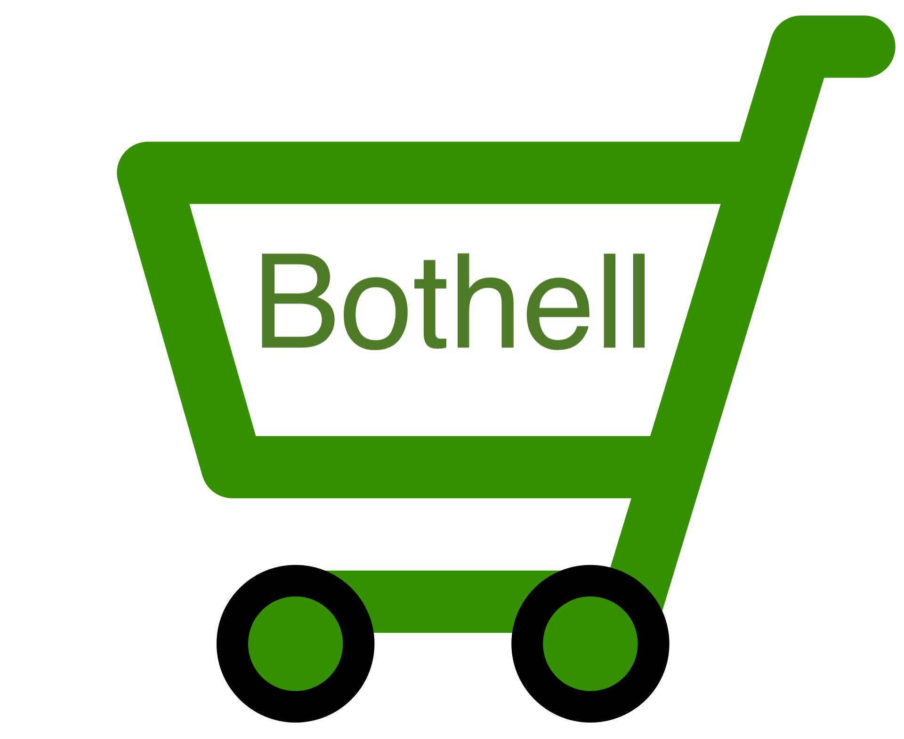

Site Purpose
Though the city of Bothell WA was incorporated in 1909, currently they don't have their own Chamber of Commerce. Instead, they share a Chamber of Commerce with neighboring Kenmore. While historically both cities have had many business interests in common, even sharing Bothell Way as their largest concentration of businesses, in recent decades Bothell has been developing much more quickly. It is appropriate that Bothell have its own Chamber of Commerce.
Available Domain Name
BothellWA.org
There are several domains registered with the Bothell name in them, but this one is currently available for registration. Ideally, the Chamber of Commerce would be set up with a sub-domain, such as chamber.bothellwa.org or similar, consistent with the site's purpose and scope.
Website Logo

The City of Bothell has its own logo, which is not available for fair-use nor adaptation. The current Chamber of Commerce for the combined Bothell and Kenmore cities is merely a stylized image of the names of the two cities. For the Bothell Chamber of Commerce, we would want to use something that represents the opportunity for local business. This image is a placeholder, made from a generic e-commerce image taken from the wikipedia commons, with the Bothell name added.